Verben, Formen und Paradigmen
Tippe eine griechische Form ein, auch ohne Akzente, und sieh Verb und Bestimmung. Dazu jedes Paradigma, Stammformen und Lernkarten.
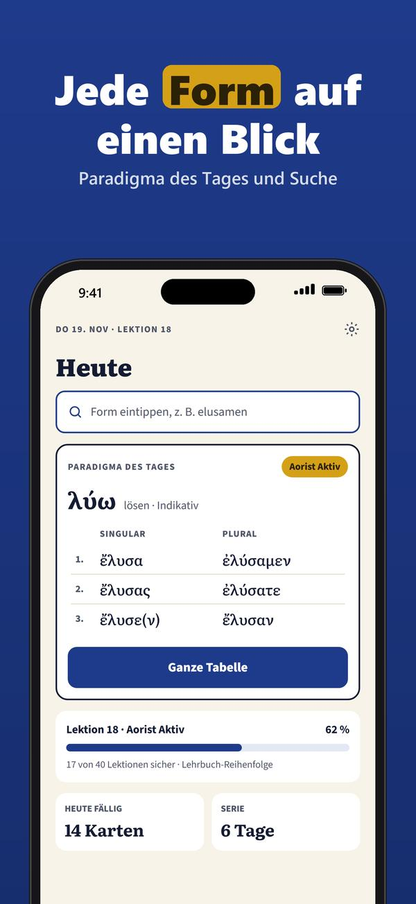
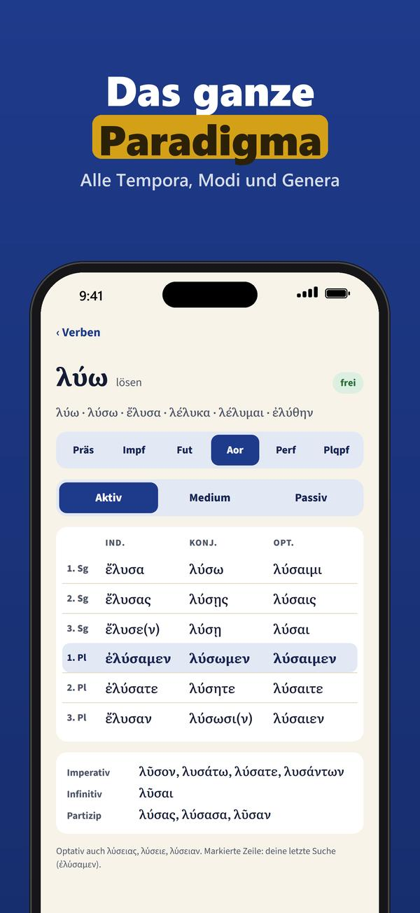
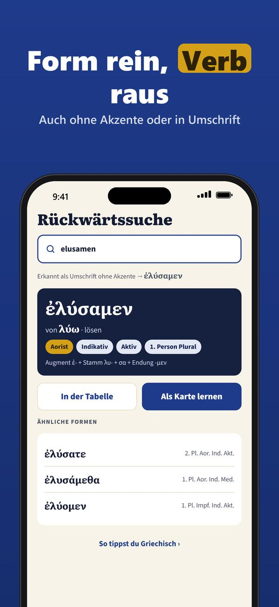
Paradeigma ist deine Grammatik-App für Altgriechisch in Schule, Graecum und Studium. 259 Verben zeigt sie mit allen geprüften Formen: alle Tempora, Modi und Genera, dazu Infinitive und Partizipien. Die Rückwärtssuche findet zu jeder Form das Verb und die genaue Bestimmung, auch wenn du ohne Akzente, in Umschrift oder in Betacode tippst. Mit Lernkarten in der Reihenfolge deines Lehrbuchs übst du genau das, was gerade dran ist.
Die 60 häufigsten Verben mit allen geprüften Formen und die Rückwärtssuche über alle Formen nutzt du immer ohne Kauf. Paradeigma Plus ist ein Abo, monatlich oder jährlich: 259 Verben, 188 Nomen, Lernkarten in Lehrbuch-Reihenfolge mit Wiederholungsplan. Keine Werbung, kein Konto.
Paradeigma ist eine unabhängige Lernhilfe ohne Verbindung zu Schulen, Verlagen oder Lehrbüchern. Gezeigt werden die attischen Formen der Schulgrammatik.
Werkwoorden en naamvallen
Typ een Griekse vorm, ook zonder accenten, en zie het werkwoord en de ontleding. Plus elk paradigma, stamtijden en leerkaarten.
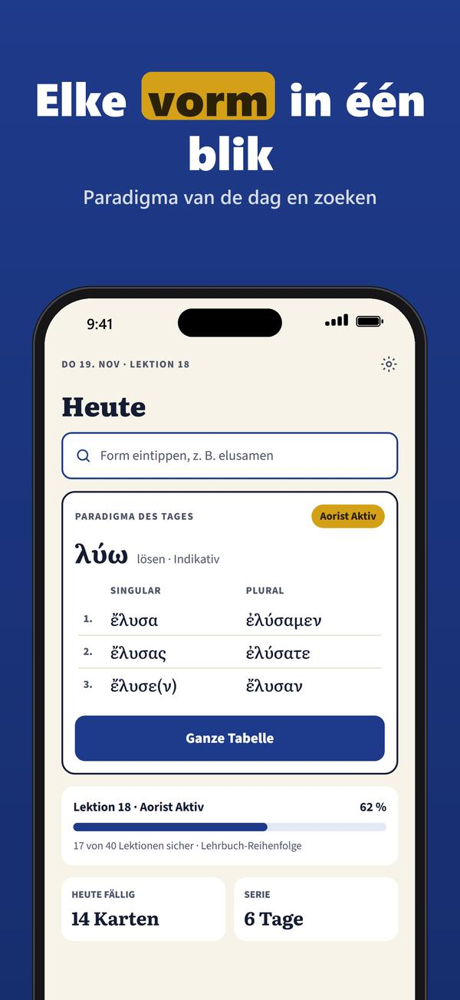
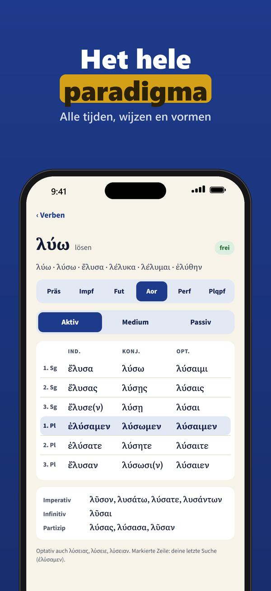
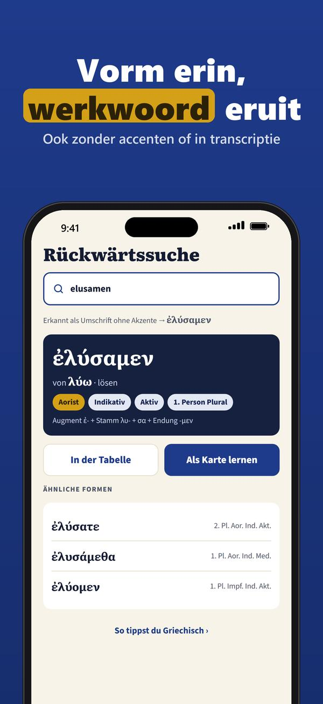
Paradeigma is je grammatica-app voor Oudgrieks op het gymnasium en in je studie. 259 werkwoorden staan erin met alle gecontroleerde vormen: alle tijden, wijzen en vormen, met infinitieven en deelwoorden. De omgekeerde zoekfunctie vindt bij elke vorm het werkwoord en de precieze ontleding, ook als je zonder accenten, in transcriptie of in Betacode typt. Met leerkaarten in de volgorde van je lesboek oefen je precies wat nu aan de beurt is.
De 60 meest gebruikte werkwoorden met alle gecontroleerde vormen en het omgekeerd zoeken over alle vormen gebruik je altijd zonder aankoop. Paradeigma Plus is een abonnement, per maand of per jaar: 259 werkwoorden, 188 naamwoorden, leerkaarten in lesboekvolgorde met herhaalschema. Geen reclame, geen account.
Paradeigma is een onafhankelijk leermiddel, zonder band met scholen, uitgevers of lesboeken. De app toont de Attische vormen uit de schoolgrammatica.
Conjugaison et déclinaisons
Tape une forme grecque, même sans accents, et vois le verbe et son analyse. Avec chaque paradigme, les temps primitifs et des cartes.
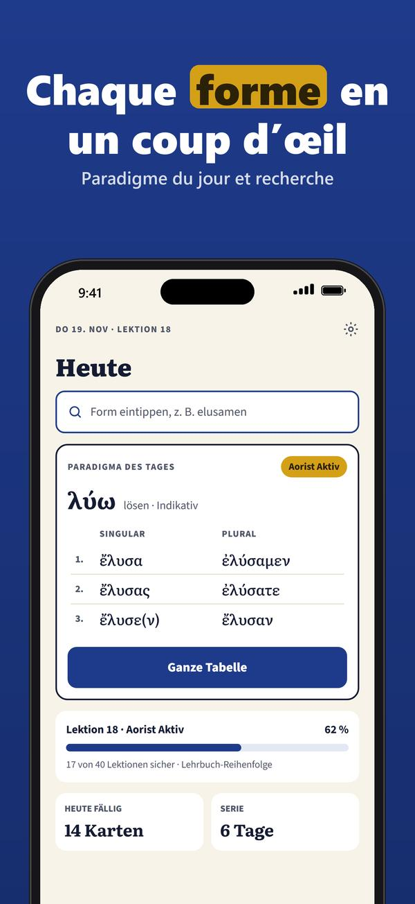
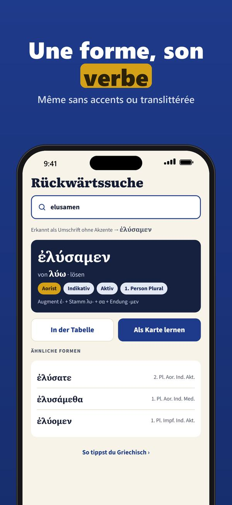
Paradeigma est ton appli de grammaire du grec ancien, au lycée, en prépa et à l’université. 259 verbes avec toutes leurs formes vérifiées : tous les temps, modes et voix, avec infinitifs et participes. La recherche inverse retrouve pour chaque forme le verbe et l’analyse exacte, même si tu tapes sans accents, en translittération ou en Betacode. Avec des cartes dans l’ordre de ton manuel, tu révises exactement la leçon en cours.
Les 60 verbes les plus fréquents avec toutes leurs formes vérifiées et la recherche inverse sur toutes les formes restent toujours accessibles sans achat. Paradeigma Plus est un abonnement, mensuel ou annuel : 259 verbes, 188 noms, cartes dans l’ordre du manuel avec plan de révision. Sans publicité, sans compte.
Paradeigma est une aide à l’apprentissage indépendante, sans lien avec des établissements, des éditeurs ou des manuels. L’appli présente les formes attiques de la grammaire scolaire.
Verbos, formas y paradigmas
Escribe una forma griega, incluso sin acentos, y ve el verbo y su análisis. Con cada paradigma, los tiempos primitivos y tarjetas.
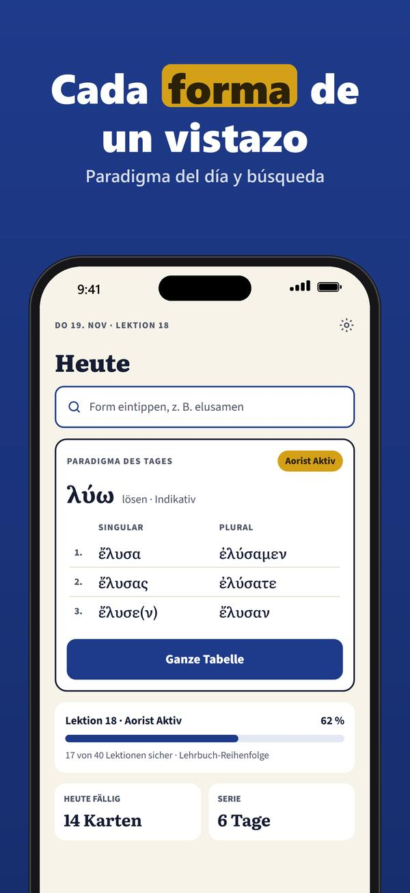
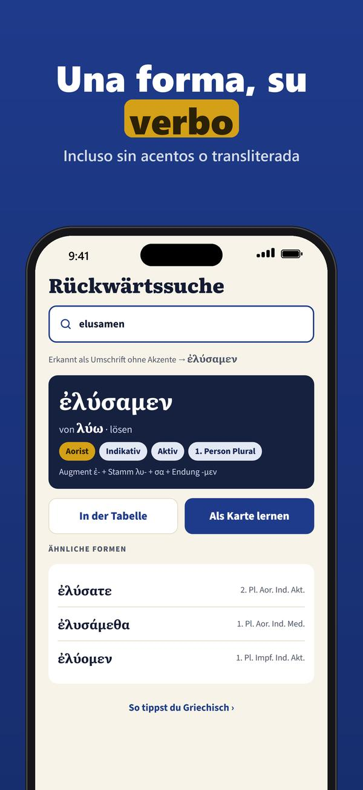
Paradeigma es tu app de gramática de griego antiguo para bachillerato y universidad. 259 verbos con todas sus formas comprobadas: todos los tiempos, modos y voces, con infinitivos y participios. La búsqueda inversa encuentra para cada forma el verbo y el análisis exacto, aunque escribas sin acentos, en transliteración o en Betacode. Con tarjetas en el orden de tu libro de texto repasas justo la lección que toca.
Los 60 verbos más frecuentes con todas sus formas comprobadas y la búsqueda inversa sobre todas las formas están siempre disponibles sin compra. Paradeigma Plus es una suscripción, mensual o anual: 259 verbos, 188 sustantivos, tarjetas en el orden del libro con plan de repaso. Sin anuncios, sin cuenta.
Paradeigma es una ayuda de estudio independiente, sin relación con centros, editoriales ni libros de texto. La app muestra las formas áticas de la gramática escolar.
Verbi, forme e paradigmi
Scrivi una forma greca, anche senza accenti, e vedi il verbo e la sua analisi. Con ogni paradigma, i paradigmi verbali e le flashcard.
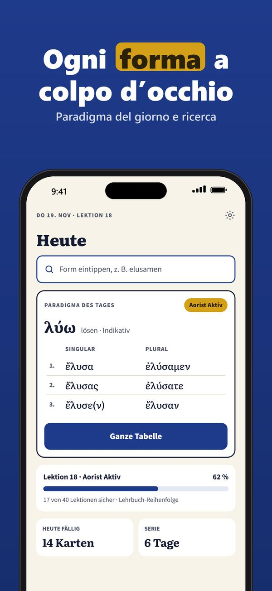
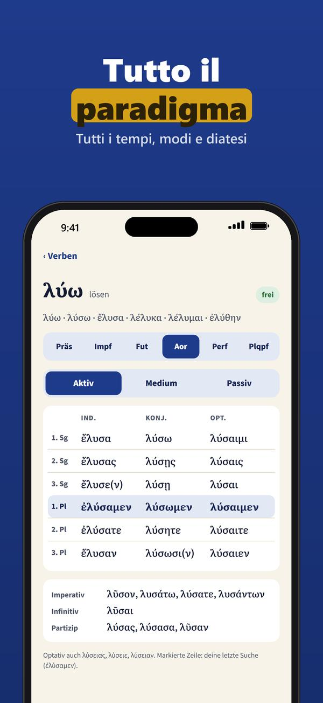
Paradeigma è la tua app di grammatica del greco antico per il liceo e l’università. 259 verbi con tutte le forme verificate: tutti i tempi, modi e diatesi, con infiniti e participi. La ricerca inversa trova per ogni forma il verbo e l’analisi esatta, anche se scrivi senza accenti, in traslitterazione o in Betacode. Con le flashcard nell’ordine del tuo libro ripassi proprio la lezione in corso.
I 60 verbi più frequenti con tutte le forme verificate e la ricerca inversa su tutte le forme sono sempre disponibili senza acquisto. Paradeigma Plus è un abbonamento, mensile o annuale: 259 verbi, 188 nomi, flashcard nell’ordine del libro con piano di ripasso. Nessuna pubblicità, nessun account.
Paradeigma è un aiuto allo studio indipendente, senza legami con scuole, editori o libri di testo. L’app mostra le forme attiche della grammatica scolastica.